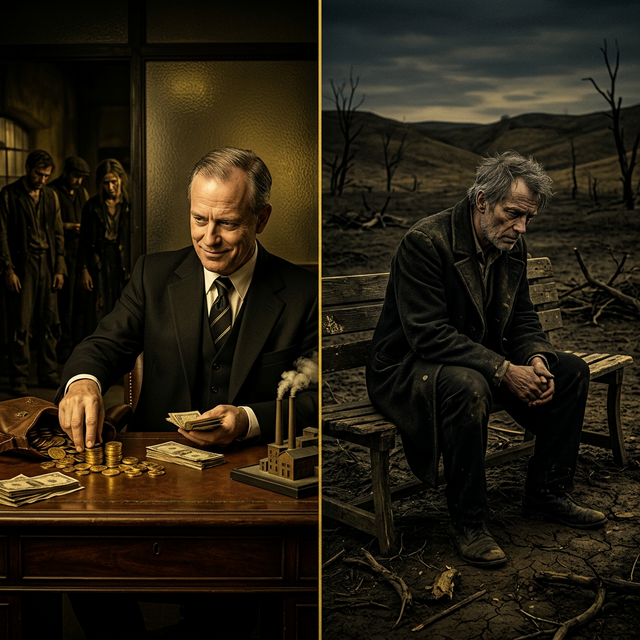
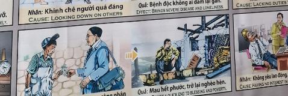

El Poder Malgastado The Wasteful Power Il potere sprecato 浪费的电力 القوة الضائعة Потерянная сила Die verschwendete Macht Le pouvoir gaspillé 無駄な電力 O poder desperdiçado
La autoridad sin compasión es un préstamo con intereses de miseria. Authority without compassion is a loan with interest of misery. L’autorità senza compassione è un prestito con interessi irrisori. 没有同情心的权威是低息贷款。 السلطة بدون رحمة هي قرض بفائدة زهيدة. Власть без сострадания — это кредит под гроши. Autorität ohne Mitgefühl ist ein Darlehen mit geringen Zinsen. L’autorité sans compassion est un prêt avec des intérêts dérisoires. 慈悲のない権威はわずかな利息のローンに等しい。 Autoridade sem compaixão é um empréstimo com juros irrisórios.
Explotar a los trabajadores para enriquecerse es una violación de la ley de equilibrio. El éxito depende de las manos de quienes desprecias.
Exploiting workers to enrich oneself is a violation of the law of balance. Success depends on the hands of those you despise.
El Karma trae el fin rápido de las bendiciones materiales. La riqueza se esfuma; el alma debe experimentar lo que significa estar en el lado vulnerable para valorar la justicia.
Karma brings a quick end to material blessings. Wealth vanishes; the soul must experience what it means to be on the vulnerable side to value justice.
El Patrón de Arcilla
The Clay Pattern
Il modello di argilla
粘土图案
نمط الطين
Узор из глины
Das Tonmuster
Le modèle d'argile
粘土の模様
O padrão de argila
Era un jefe duro que robaba el sudor de sus jornaleros, pagándoles con humillación y migajas. Mientras él dormía en sábanas de seda fina, ellos apenas tenían cómo alimentar a sus familias. Se creía astuto y próspero...
Pero la balanza invisible del universo mide la justicia con exactitud. De la noche a la mañana, sus riquezas se esfumaron. Se vio en la calle, mendigando un rincón oscuro donde descansar, sintiendo el desprecio y el rigor de quienes pasaban a su lado.
Tuvo que ensuciar sus manos con el barro, sudar sangre por unas pocas monedas, y sentir la impotencia quemándole el pecho. Era necesario que el amo se hiciera esclavo, para que entendiera que el sustento es sagrado, que el trabajador merece honra... y que la verdadera riqueza es prosperar sin pisar jamás a nadie.
He was a tough boss who stole the sweat of his laborers, paying them with humiliation and crumbs. While he slept on fine silk sheets, they barely had enough to feed their families. He thought he was clever and prosperous...
But the invisible scales of the universe measure justice accurately. Overnight, his wealth vanished. He saw himself on the street, begging for a dark corner to rest, feeling the contempt and rigor of those who passed by him.
He had to dirty his hands with mud, sweat blood for a few coins, and feel helplessness burning his chest. It was necessary for the master to become a slave, so that he would understand that sustenance is sacred, that the worker deserves honor... and that true wealth is to prosper without ever stepping on anyone.
Era un capo duro che rubava il sudore dei suoi braccianti, pagandoli con umiliazioni e briciole. Mentre lui dormiva su lenzuola di seta pregiata, loro avevano a malapena abbastanza per sfamare le loro famiglie. Pensava di essere intelligente e prospero...
Ma la bilancia invisibile dell’universo misura accuratamente la giustizia. Da un giorno all'altro, la sua ricchezza svanì. Si vedeva per strada, implorando un angolo buio dove riposarsi, sentendo il disprezzo e il rigore di chi gli passava accanto.
Ha dovuto sporcarsi le mani di fango, sudare sangue per pochi soldi e sentire l'impotenza bruciargli il petto. Era necessario che il padrone diventasse schiavo, affinché capisse che il sostentamento è sacro, che il lavoratore merita onore... e che la vera ricchezza è prosperare senza mai calpestare nessuno.
他是一个强硬的老板，偷走了工人的汗水，却给他们带来了羞辱和面包屑。当他睡在精美的丝绸床单上时，他们几乎无法养家糊口。他以为自己聪明又富有……
但宇宙的无形尺度能够准确地衡量正义。一夜之间，他的财富化为乌有。他看到自己在街上乞求一个黑暗的角落休息，感受到路人的蔑视和严厉。
他必须双手沾满泥土，为几个硬币而流汗，无助地感到胸口火辣辣的。主人有必要成为奴隶，这样他才会明白，食物是神圣的，工人应该得到荣誉……真正的财富是在不践踏任何人的情况下繁荣发展。
لقد كان رئيسًا قاسيًا يسرق عرق عماله، ويدفع لهم الإذلال والفتات. وبينما كان ينام على ملاءات من الحرير الناعم، لم يكن لديهم سوى ما يكفي لإطعام أسرهم. كان يظن أنه ذكي ومزدهر..
لكن المقاييس غير المرئية للكون تقيس العدالة بدقة. وبين عشية وضحاها اختفت ثروته. رأى نفسه في الشارع، يستجدي ركنًا مظلمًا يستريح فيه، يشعر باحتقار وصرامة من يمر بجانبه.
كان عليه أن يلوث يديه بالطين، وأن يتصبب عرقاً من أجل الحصول على بضع عملات معدنية، وأن يشعر بالعجز وهو يحرق صدره. كان لا بد للسيد أن يصبح عبداً، حتى يفهم أن الرزق مقدس، وأن العامل يستحق الشرف... وأن الثروة الحقيقية هي أن تزدهر دون أن تدوس على أحد.
Он был жестким начальником, который воровал пот своих работников, платя им унижением и крошками. Хотя он спал на тонких шелковых простынях, им едва хватало еды, чтобы прокормить свои семьи. Он думал, что он умный и преуспевающий...
Но невидимые весы Вселенной точно измеряют справедливость. В одночасье его богатство исчезло. Он видел себя на улице, выпрашивающего темный угол для отдыха, чувствуя презрение и строгость проходящих мимо него.
Ему пришлось испачкать руки грязью, потеть кровью за несколько монет и чувствовать беспомощность, обжигающую грудь. Хозяину необходимо было стать рабом, чтобы он понял, что пропитание священно, что рабочий заслуживает чести... и что истинное богатство - это процветать, никогда ни на кого не наступая.
Er war ein harter Chef, der seinen Arbeitern den Schweiß stahl und sie mit Demütigungen und Krümeln bezahlte. Während er auf feinen Seidenlaken schlief, hatten sie kaum genug, um ihre Familien zu ernähren. Er dachte, er sei klug und wohlhabend ...
Aber die unsichtbaren Maßstäbe des Universums messen die Gerechtigkeit genau. Über Nacht verschwand sein Reichtum. Er sah sich selbst auf der Straße, wie er um eine dunkle Ecke zum Ausruhen bettelte, und spürte die Verachtung und Strenge derer, die an ihm vorbeigingen.
Er musste seine Hände mit Schlamm beschmutzen, für ein paar Münzen Blut schwitzen und spürte, wie Hilflosigkeit in seiner Brust brannte. Der Herr musste ein Sklave werden, damit er verstehen konnte, dass der Lebensunterhalt heilig ist, dass der Arbeiter Ehre verdient ... und dass wahrer Reichtum darin besteht, zu gedeihen, ohne jemals auf jemanden zu treten.
C'était un patron coriace qui volait la sueur de ses ouvriers, les payant avec des humiliations et des miettes. Alors qu'il dormait sur de fins draps de soie, ils avaient à peine de quoi nourrir leur famille. Il se croyait intelligent et prospère...
Mais la balance invisible de l’univers mesure la justice avec précision. Du jour au lendemain, sa richesse a disparu. Il se voyait dans la rue, implorant un coin sombre pour se reposer, ressentant le mépris et la rigueur de ceux qui passaient à côté de lui.
Il a dû se salir les mains avec de la boue, transpirer du sang pour quelques pièces et se sentir impuissant en lui brûlant la poitrine. Il fallait que le maître devienne esclave, pour qu'il comprenne que la subsistance est sacrée, que le travailleur mérite l'honneur... et que la vraie richesse c'est de prospérer sans jamais marcher sur personne.
彼は労働者の汗を盗み、屈辱とパン粉で報酬を支払う厳しい上司でした。彼は上質な絹のシーツで寝ていましたが、家族を養うのに十分な量しかありませんでした。彼は自分が賢くて裕福だと思っていた...
しかし、宇宙の目に見えない秤は正義を正確に測ります。一夜にして彼の財産は消え去った。彼は路上で、暗い隅で休んでほしいと懇願し、通り過ぎる人々の軽蔑と厳しさを感じていた。
数枚のコインのために手を泥で汚し、血の汗をかき、胸が焼けつくような無力感を感じなければならなかった。主人が奴隷になる必要があったのは、食料は神聖なものであり、労働者には名誉が与えられるべきであるということ、そして真の富とは誰にも踏まれずに繁栄することである、ということを理解してもらうためでした。
Ele era um chefe durão que roubava o suor de seus trabalhadores, pagando-os com humilhações e migalhas. Enquanto ele dormia em lençóis de seda fina, eles mal tinham o suficiente para alimentar suas famílias. Ele se achava inteligente e próspero...
Mas as escalas invisíveis do universo medem a justiça com precisão. Da noite para o dia, sua riqueza desapareceu. Viu-se na rua, implorando por um canto escuro para descansar, sentindo o desprezo e o rigor de quem por ele passava.
Ele teve que sujar as mãos com lama, suar sangue por algumas moedas e sentir o desamparo queimando seu peito. Foi necessário que o senhor se tornasse escravo, para que entendesse que o sustento é sagrado, que o trabalhador merece honra... e que a verdadeira riqueza é prosperar sem nunca pisar em ninguém.
La Inspiración Original
The Original Inspiration
L'Ispirazione Originale
最初的灵感
الإلهام الأصلي
Оригинальное вдохновение
Die Ursprüngliche Inspiration
L'Inspiration Originale
元のインスピレーション
A Inspiração Original
La historia que hemos relatado en este capítulo está inspirada por el pasaje de la escena original de los murales «Tranh Nhân Quả» (Ilustraciones del Karma) del Templo Linh Ung en Da Nang, capturado en la imagen.
La storia che abbiamo raccontato in questo capitolo è ispirata al passaggio della scena originale dei murali “Tranh Nhân Quả” (Illustrazioni del Karma) del Tempio Linh Ung a Da Nang, catturati nell'immagine.
我们在本章中讲述的故事的灵感来自图像中捕获的岘港灵应寺“Tranh Nhân Quả”（业力插图）壁画的原始场景。
القصة التي رويناها في هذا الفصل مستوحاة من مقطع من المشهد الأصلي لجداريات "ترانه نهان كو" (الرسوم التوضيحية للكارما) لمعبد لينه أونغ في دا نانغ، الملتقطة في الصورة.
История, которую мы рассказали в этой главе, вдохновлена отрывком из оригинальной сцены фрески «Тран Нхан Ку» («Иллюстрации кармы») храма Линь Унг в Дананге, запечатленной на изображении.
Die Geschichte, die wir in diesem Kapitel erzählt haben, ist inspiriert von der Passage aus der Originalszene der Wandgemälde „Tranh Nhân Quả“ (Illustrationen von Karma) des Linh Ung-Tempels in Da Nang, die im Bild festgehalten ist.
L'histoire que nous avons racontée dans ce chapitre est inspirée du passage de la scène originale des peintures murales « Tranh Nhân Quả » (Illustrations du Karma) du temple Linh Ung à Da Nang, capturées dans l'image.
この章で私たちが語った物語は、ダナンのリンウン寺院の壁画「Tranh Nhân Quả」（カルマの図）の元のシーンの一節からインスピレーションを得て、画像に収められています。
A história que contamos neste capítulo é inspirada na passagem da cena original dos murais “Tranh Nhân Quả” (Ilustrações do Karma) do Templo Linh Ung em Da Nang, capturada na imagem.
The story we have related in this chapter is inspired by the passage from the original scene of the "Tranh Nhân Quả" (Karma Illustrations) murals at the Linh Ung Temple in Da Nang, captured in the image.

Como se puede apreciar en el pasaje extraído del mural, la causa y su efecto kármico están descritos originalmente en vietnamita y con una breve traducción al inglés. A continuación, te ofrecemos su traducción detallada en los distintos idiomas:
As can be seen in the passage extracted from the mural, the cause and its karmic effect are originally described in Vietnamese with a brief English translation. Below, we offer the detailed translation in different languages:
Come si può vedere nel passaggio estratto dal murale, la causa e il suo effetto karmico sono originariamente descritti in vietnamita con una breve traduzione in inglese. Di seguito offriamo la traduzione dettagliata in diverse lingue:
正如壁画所见，原因及其业报原本用越南语描述并配有简短英文翻译。以下是各种语言的详细翻译：
كما يمكن رؤيته في المقطع المقتبس من اللوحة الجدارية، فإن السبب وتأثيره الكارمي موصوفان في الأصل باللغة الفيتنامية مع ترجمة إنجليزية موجزة. نقدم أدناه الترجمة التفصيلية بلغات مختلفة:
Как видно из отрывка, взятого из фрески, причина и кармический эффект изначально описаны на вьетнамском языке с кратким английским переводом. Ниже мы предлагаем подробный перевод на разные языки:
Wie in der aus dem Wandgemälde entnommenen Passage zu sehen ist, werden die Ursache und ihre karmische Wirkung ursprünglich auf Vietnamesisch mit einer kurzen englischen Übersetzung beschrieben. Nachfolgend bieten wir die detaillierte Übersetzung in verschiedenen Sprachen an:
Comme on peut le voir dans le passage extrait de la fresque, la cause et son effet karmique sont décrits à l'origine en vietnamien avec une brève traduction en anglais. Ci-dessous, nous proposons la traduction détaillée dans différentes langues :
壁画から抽出された一節に見られるように、原因とそのカルマ的影響は元々ベトナム語で説明されており、短い英訳が添えられています。以下に、さまざまな言語での詳細な翻訳を示します。
Como pode ser visto na passagem extraída do mural, a causa e seu efeito cármico são originalmente descritos em vietnamita com uma breve tradução para o inglês. Abaixo, oferecemos a tradução detalhada em diferentes idiomas:
🇻🇳 Tiếng Việt:
Nguyên nhân: Đối xử tệ với nhân viên. | Tác dụng: Dẫn đến sự chấm dứt nhanh chóng phước lành và nghèo đói.
Traducción Recreada:
Causa: Tratar mal a los empleados.
Efecto: Conduce a un rápido final de las bendiciones y a la pobreza.
Recreated Translation:
Cause: Treating employees poorly.
Effect: Brings a quick end to blessing and poverty.
Traduzione ricreata:
Causa: trattare male i dipendenti.
Effetto: porta a una rapida fine delle benedizioni e della povertà.
重新翻译：
原因：对待员工不好。
结果：导致祝福和贫困的快速结束。
إعادة إنشاء الترجمة:
السبب: معاملة الموظفين بشكل سيئ.
التأثير: يؤدي إلى نهاية سريعة للبركات والفقر.
Воссозданный перевод:
Причина: Плохое обращение с сотрудниками.
Следствие: Приводит к быстрому прекращению благ и бедности.
Nachgebildete Übersetzung:
Ursache: Schlechte Behandlung von Mitarbeitern.
Wirkung: Führt zu einem schnellen Ende von Segen und Armut.
Traduction recréée :
Cause : Maltraiter les employés.
Effet : Conduit à une fin rapide des bénédictions et de la pauvreté.
再作成された翻訳:
原因: 従業員のひどい扱い。
結果: 祝福と貧困の早期終結につながります。
Tradução recriada:
Causa: Tratar mal os funcionários.
Efeito: Leva ao fim rápido das bênçãos e da pobreza.
Análisis: Tratar con injusticia y maldad a quienes nos sirven consume velozmente nuestras bendiciones materiales, hundiendo el destino en la ruina para enseñarnos el respeto sagrado hacia el trabajador.
Analysis: Treating those who serve us with injustice and evil quickly consumes our material blessings, plunging destiny into ruin to teach us sacred respect for the worker.
Analisi: trattare coloro che ci servono con l'ingiustizia e il male consuma rapidamente le nostre benedizioni materiali, facendo precipitare il destino nella rovina per insegnarci il sacro rispetto per il lavoratore.
分析：以不公正和邪恶的方式对待那些为我们服务的人，很快就会消耗我们的物质福祉，使命运陷入毁灭，从而教会我们对工人的神圣尊重。
التحليل: إن معاملة أولئك الذين يخدموننا بالظلم والشر تستهلك بسرعة بركاتنا المادية، مما يؤدي إلى إغراق القدر في الخراب ليعلمنا الاحترام المقدس للعامل.
Анализ. Несправедливое и злое обращение с теми, кто служит нам, быстро уничтожает наши материальные блага, повергая судьбу в руины, чтобы научить нас священному уважению к трудящемуся.
Analyse: Die Behandlung derjenigen, die uns dienen, mit Ungerechtigkeit und Bösem verzehrt schnell unsere materiellen Segnungen und stürzt unser Schicksal in den Ruin, um uns heiligen Respekt vor dem Arbeiter zu lehren.
Analyse : Traiter ceux qui nous servent avec injustice et mal consomme rapidement nos bénédictions matérielles, plongeant le destin dans la ruine pour nous enseigner le respect sacré du travailleur.
分析: 私たちに仕える人たちを不当や邪悪な扱いをすると、私たちの物質的な祝福はすぐに消費され、運命を破滅に陥らせて、私たちに労働者に対する神聖な敬意を教えます。
Análise: Tratar aqueles que nos servem com injustiça e maldade rapidamente consome nossas bênçãos materiais, mergulhando o destino na ruína para nos ensinar o respeito sagrado pelo trabalhador.
Si quieres conocer más sobre el proyecto o colaborar, accede a nuestro Linktree.
If you want to know more about the project or collaborate, access our Linktree.
Se vuoi saperne di più sul progetto o collaborare, accedi al nostro Linktree.
如果您想了解有关该项目或合作的更多信息，请访问我们的 Linktree.
إذا كنت تريد معرفة المزيد عن المشروع أو التعاون، قم بالوصول إلى موقعنا Linktree.
Если вы хотите узнать больше о проекте или сотрудничать, посетите наш Linktree.
Wenn Sie mehr über das Projekt erfahren oder zusammenarbeiten möchten, greifen Sie auf unsere zu Linktree.
Si vous souhaitez en savoir plus sur le projet ou collaborer, accédez à notre Linktree.
プロジェクトについて詳しく知りたい場合、またはコラボレーションしたい場合は、こちらにアクセスしてください。 Linktree.
Se quiser saber mais sobre o projeto ou colaborar, acesse nosso Linktree.